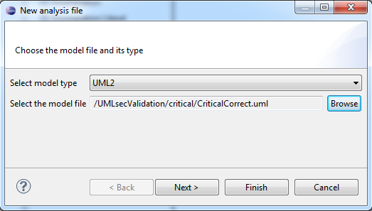

Figure: Analysis Wizard - Page 1
By default, the analysis file will be stored in the folder where the model lies that will be analyzed.
Now click Finish to create the analysis file.
The new analysis is automatically opened and shown in the editor view.